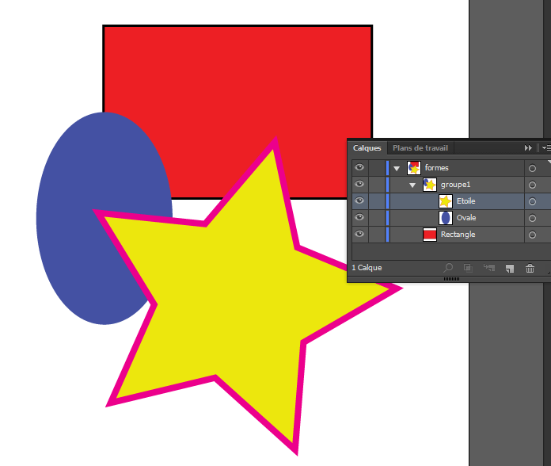

Compatibilité navigateurs
Les svg sont aujourd'hui reconnus par tous les navigateurs modernes. Pour les plus anciens, des solutions de fallback existent, et remplacent le svg par un fichier image plus classique (jpeg, png...).
Ci-dessous une liste précisant à partir de quelle version les principaux navigateurs ont interpreté totalement ce format :
 |
 |
|||||
| 9.0 | 4.0 | 3.0 | 3.2 | 10.1 | 3.2 | 4.4 |
Quelques problèmes subsistent (évidemment...) sur ie9 et supérieur, aussi une section lui est dédiée.
Création d'un SVG
Depuis Illustrator

<?xml version="1.0" encoding="utf-8"?>
<!-- Generator: Adobe Illustrator 17.0.1, SVG Export Plug-In . SVG Version: 6.00 Build 0) -->
<!DOCTYPE svg PUBLIC "-//W3C//DTD SVG 1.1//EN" "http://www.w3.org/Graphics/SVG/1.1/DTD/svg11.dtd">
<svg version="1.1" id="formes" xmlns="http://www.w3.org/2000/svg" xmlns:xlink="http://www.w3.org/1999/xlink" x="0px" y="0px"
width="595.3px" height="841.9px" viewBox="0 0 595.3 841.9" xml:space="preserve">
<rect id="Rectangle" x="134" y="131" fill="#ED1F24" stroke="#000000" stroke-width="3" stroke-miterlimit="10" width="339" height="218"/>
<g id="groupe1">
<ellipse id="Ovale" fill="#4451A3" cx="135" cy="374" rx="86" ry="134"/>
<polygon id="Etoile" fill="#ECE70D" stroke="#EC008C" stroke-width="8" stroke-miterlimit="10" points="127,367 262.1,381.1
350.2,277.8 378.6,410.6 504,462.5 386.5,530.5 375.9,665.9 274.9,575.1 142.9,606.8 198,482.8 "/>
</g>
</svg>
Exemple avec la création d'un SVG composé de trois formes. Bien qu'on essaie de croper la forme au plus près, pour faciliter la manipulation, laisser quelques pixels autour peut-être judicieux, pour anticiper des modifications de contour. L'ordre des calques est respecté (même si visuellement inversé, entre calques et code xml).
Les groupes de calques sont aussi convertis, et les noms des calques (groupes et racine) convertis en Identifiants (auquels se greffent un chiffre si le même ID est présent plusieurs fois dans le code). Les formes simples ont aussi été converties en langage xml.
Il est important d'éviter les aller-retour dans illustrator. Celui-ci manipulera automatiquement votre code en supprimant les css, les classes, en rajoutant une taille, en changeant la viewBox...
Utiliser le menu Objet - Associer / Dissocier pour nettoyer les groupes.
Une fois le SVG exporté, utiliser au moins svgomg pour nettoyer le code.
Il peut-être aussi judicieux de supprimer les propriétés height et width, pour rendre le SVG facilement "responsive".
S'il n'est pas utilisé (comme pour l'appel d'une feuille de style), supprimer aussi la déclaration xml et le doctype.
Le namespace svg doit être ajouté dans la balise d'ouverture, si le svg est dans un fichier externe, et non intégré directement dans le code html :
<svg ... xmlns="http://www.w3.org/2000/svg">
Les balises title et desc, bien que facultatives, sont notamment utiles pour le référencement et certains agents
utilisateurs.
<title>Titre du SVG</title>
<desc>Description du SVG</desc>
Construction et modification du SVG
Rectangle
<rect
x="25px" y="25px" width="150" height="100" />
Le rectangle utilise la balise <rect>, les coordonnées x et y et les déclarations de dimensions width et height.
Cercle et ovale
<circle
cx="60" cy="50" r="50" />
Le centre du cercle (<circle>) est positionné dans le SVG avec cx et cy. r définit la taille du rayon.
<ellipse
cx="60" cy="60" rx="60" ry="30" />
Pour l'ovale, (<ellipse>), il y a deux rayons, correspondant au grand et petit axe.
Polygone
<polygon
points="50 15, 100 100, 0 100 />
Chaque paire de coordonnées, séparée par des virgules, correspond à un point du polygone (<polygon>), représentant x et y.
Les virgules ne sont pas obligatoires, et ne servent qu'au confort visuel du code.
Ligne et polyligne
<line
x1="50" y1="0" x2="150" y2="100" stroke="black" />
La ligne (<line>) est tracée grâce aux coordonnées de départ (x1 et y1) et d'arrivée (x2 et y2). Une couleur doit être définie.
<polyline
points="0 100, 100 0, 150 50, 110 50, 180 0" fill="transparent" stroke="black />
La polyligne (<polyline>) peut être considérée comme un polygone non fermée. Il est "rempli" d'une couleur par défaut (fill), et son tracé transparent.
Chemin
<
path
d="
M
0,100
L
100,0 L 180,50 L 220,0
l
40,80 l -60 5" style="fill:none; stroke:black" />
Le chemin est peut-être la balise la plus importante (et la plus représentée dans votre SVG), puisqu'elle permet de tracer tout ce qui n'est pas défini ci-dessus.
<
path
d="M 5 40
a
55 30 0 0 0 155 0
A
80 10 0 0 0 5 40 z" fill="transparent" stroke="black" />
Le chemin ci-dessus utilise des courbes (A), définies par 7 paramètres :
- Le rayon de x
- Le rayon de y
- L'axe de rotation de démarrage
- Le large flag (0 (petit), ou 1 (grand))
- Le sweep-flag (0 (sens anti-horaire), ou 1 (sens horaire))
- Le point d'arrivée x
- Le point d'arrivée 7
Intégration
Les exemples suivants intégrent le même code svg. La roue de gauche , en bleu, utilise des styles internes. La roue de droite , en rouge, appelle une css externe.
En plus de toutes les solutions de fallback proposées, Modernizr reste un outil complémentaire très utile pour gérer l'affichage des textes ou images alternatifs.
Intégration via balise SVG
<
svg
>...</
svg
>
Intégrer le SVG directement dans le code html reste la méthode la plus simple, et la plus flexible.
Elle évite des requêtes http supplémentaires
On peut facilement atteindre et manipuler via css ou javascript les noeuds qui le composent, utiliser les intéractions css (type ":focus), des animations css, ajouter des liens...
Inconviénients : peu maintenable, augmentation de la taille du fichier html, à réserver si le svg est utilisé une unique fois sur le site.
On peut s'affranchir de ces inconvénients en utilisant, selon les possibilités, des méthodes d'appel tel que
<?php include("bike.svg"); ?>, ou ng-include="'bike.svg'".
Fallback
L'intégration d'un contenu alternatif peut se faire au coeur du svg dans une balise <foreignObject>,
mais son contenu sera chargé par tous les navigateurs, qu'ils comprennent ou non le format svg.
Au pire, le contenu de la balise <desc> s'affichera à la place du svg, s'il n'est pas lu.
Via la balise <img>
<
img
src="img/bike.svg" alt="un beau vélo" >
L'intégration dans une balise IMG est également facile, peut-être plus claire et plus intuitive, mais son contenu est inaccessible au javascript, et son CSS doit être inclus dans le code SVG.
Fallback
Le fallback de cette méthode d'intégration est la plus ardue. Pour aller au plus simple, on peut se reposer sur l'attribut alt que nous permet cette balise.
On peut aussi recourir à la balise <srcset> pour
proposer une image alternative (<img src="bike.png" srcset="bike.svg"/>), mais cela demandera l'utilisation d'un polyfill.
On peut aussi recourir à des librairies javascript, comme SVGMagic.
En arrière-plan (css)
background
: url("bike.svg");
L'intégration en css est semblable à la balise <img> (avantages comme inconvénients), en dissociant un peu plus le fond de la forme.
Fallback
On a ici recours a une petite ruse. Si le navigateur sait interpréter les dégradés linéaires ET les arrière-plan multiples, il connait aussi le format SVG.
S'il ne connait pas cette syntaxe, il revient en arrière sur la valeur déclarée précédemment.
background: url("bike.png");
background: url("bike.svg"), linear-gradient(transparent, transparent);
Dans une balise OBJECT
<object type="image/svg+xml" data="img/bike.svg">
Ce texte est affiché si le navigateur de peut pas lire le SVG.
</
object
>
Cette solution n'a en apparence qu'un seul vrai désavantage, l'impossibilité d'en faire un lien.
C'est en réalité un problème facilement contournable. On peut nativement intégrer des liens dirèctement à l'intérieur du svg (en précisant la cible (target) afin que la page ne s'ouvre pas dans l' "object").
On peut également utiliser du CSS pour rendre fonctionnel le lien englobant notre balise object :
.mon-lien::after {
content: "";
position: absolute;
top: 0;
right: 0;
bottom: 0;
left: 0;
}
NB: oui, sans préciser une position relative sur le lien lui-même...
Fallback
Du contenu alternatif (png, texte...) peut-être intégré simplement entre les balises d'ouverture et de fermeture. Il sera malheureusement aussi chargé (mais non affiché) par les navigateurs comprenant le format svg.
dans une iframe
<iframe src="bike.svg">
<img src="bike.png" alt="Un beau vélo"/>
</
iframe
>
Lorsqu'on a le choix, il n'y a pas vraiment d'intéret à choisir d'intégrer un svg dans une iframe. Cette solution n'apporte rien de plus.
Pas de css externe, et pas de manipulation en javascript, sauf si le SVG et la page web actuelle ont la même origine.
Fallback
Pas de fallback connu. L'image alternative entre les balises d'ouverture et de fermeture de l'iframe ne sont interprétées que si l'iframe elle-même n'est pas prise en charge.
via balise EMBED
Plus aucun intéret aujourd'hui.
Le format Data URI
Quel que soit le mode d'intégration choisi, on peut embarquer les données du SVG
directement dans le html via le format Data URI.
Le premier avantage de ce format, qui n'est pas nouveau, est de limiter les requêtes HTTP, mais l'appliquer aux svg nous offre de nouvelles possibilités.
L'exemple suivant reprend notre vélo, avec la bordure de la roue droite grossie et teintée (stroke="#07a5e0"
stroke-width="10").
background-image: url('data:image/svg+xml;
utf8
,
<svg>...</svg>
');
Cela ne marche actuellement ni sur Firefox, ni sur Internet Explorer. Il faut d'abord convertir les caractères spéciaux.
Plusieurs mixins Sass existent comme svg-url
On peut maintenant réunir les avantages des deux mondes : utilisation de background pour la maintenabilité du code (dissociation fond/forme), et modification des styles du svg.
Application avec le préprocesseur Sass
SVG d'origine :
On place dans une variable le code svg qui sera appelé en arrière-plan :
$velo: '<svg>
...
<path id="rayons_droite" stroke="#07a5e0" stroke-width="10" d="M588......"/>
...
<path id="cadre" fill="#7F7F7F" d="M373......"/>
...
</svg>';
Utilisation d'une mixin pour remplacer les caractères spéciaux :
.image {
background-image: svg-url($velo);
}
On a maintenant un code exploitable sur tout navigateur, dont on va pouvoir modifier les attributs
(fill,
stroke...).
$velo-orange: str-replace($velo, stroke="#07a5e0", stroke="orange");
Voire utiliser une mixin qui cible directement les couleurs, peu importe l'attribut.
@function svg-replace-fill($svg, $fill-to-replace, $new-fill...) {
$replaced-svg: str-replace($svg, $fill-to-replace, $new-fill);
$replaced-svg-url: svg-url(('#{$replaced-svg}');
@return $replaced-svg-url;
}
background-image: svg-replace-fill(
$velo
, '
#7F7F7F
', '
red
');
Si cette technique permet d'approcher une certaine maîtrise des styles d'un SVG, on en voit vite les faiblesses. Si plusieurs chemins ont d'origine la même couleur déclarée, tous seront modifiés ensemble, sans distinction.
Il convient avant toute modification d'appliquer un maximum de couleurs, ou tout du moins à toute partie du svg susceptible d'être modifiée.
Le viewPort et la viewBox
Définition
Le viewPort est simplement la taille du svg, définie par les attributs "width" et "height".
La viewBox va préciser la place que vont prendre les éléments graphiques à l'intérieur de ce conteneur.
Les coordonnées indiquent respectivement les deux points d'origine de la viewBox, et ses points d'arrivée sur les axes X et Y :
<svg width="400" height="200" viewBox="0 0 400 200">
<circle cx="200" cy="100" r="80"fill="blue" />
</svg>
NB: par défaut, l'unité utilisée est le pixel. Dans un contexte responsif, la taille n'a plus d'importance, seul le ratio viewBox/viewPort compte.
Par défaut, les points d'arrivée de la viewBox correspondent à la taille du viewPort. Dans ce cas, le ratio est de 1/1.
Dans l'exemple ci-dessus, notre disque de 80px de rayon affiche bien 160px de diamètre dans son conteneur.
Relation et manipulation
Si les points d'arrivée de la viewBox sont réduits, le ratio viewBox/viewPort est modifié d'autant.
Dans l'exemple ci-dessous, les valeurs de la viewBox sont deux fois plus petites que celles du viewPort. Conséquence, le ratio de 2/1 va doubler l'affichage de son contenu (qui n'apparaitra donc plus qu'en partie, puisque le viewPort reste inchangé) :
<svg width="400" height="200" viewBox="0 0 200 100">
<circle cx="200" cy="100" r="80"fill="blue" />
</svg>
A l'inverse, plus la taille de la viewBox est supérieure à celle du viewPort, plus son contenu apparaitra proportionnellement petit.
Ici, le ratio viewBox/viewPort affiche notre forme à 50% de sa taille :
<svg width="400" height="200" viewBox="0 0 800 400">
<circle cx="200" cy="100" r="80"fill="blue" />
</svg>
En modifiant les points d'origine, on en touche plus au ratio, qui va définir la proportion de la forme, mais on précise quelle portion on va afficher :
<svg width="400" height="200" viewBox="200 100 400 200">
<circle cx="200" cy="100" r="80"fill="blue" />
</svg>
Ici, notre forme a toujours un ratio de 1/1. Sa taille n'est pas modifiée, mais les points d'origine sont placés à 200px et 100px du viewPort, ce qui réduit d'autant la partie visible du contenu du SVG.
La valeur X de la viewBox, ici "200" revient à "décaler" le contenu de 200px vers la gauche. Son conteneur reste identique, créant un blanc supplémentaire sur la droite.
Pour bien faire, il faudrait donc réduire également la viewBox ET le viewPort (afin de réduire la taille du svg, sans toucher au ratio) :
<svg width="100" height="100" viewBox="200 100 100 100">
<circle cx="200" cy="100" r="80"fill="blue" />
</svg>
En conclusion, tout ceci est un peu théorique, et peu utile à retenir. En effet, il est conseillé de supprimer purement et simplement les valeurs de viewPort.
Ainsi, la taille de celui-ci sera celle de son conteneur. Dès lors, plus de raison de se soucier de la taille de notre forme, qui sera confortablement définie en css.
Reprenons notre dernier exemple, sans les déclarations de hauteur et de largeur :
<svg viewBox="200 100 100 100">
<circle cx="200" cy="100" r="80"fill="blue" />
</svg>
C'est pareil, mais en mieux ! Prêt à être intégré dans un environnement responsif.
L'attribut preserveAspectRatio
La seule utilité de le déclarer est si le viewPort et la viewBox ont des valeurs différentes (ou pour être plus précis, pas le même ratio largeur et hauteur).
Dans ce cas, la propriété preserveAspectRatio permet de conserver une image entière, et non
déformée.
L'alignement
Il est déclaré avec une syntaxe de type xMinYMid.
Dans cet exemple, la viewBox est positionnée au début de l'axe des abscisses (xMin) et centré sur l'axe des ordonnées (YMid) (Liste exhaustive des attributs).
L'étirement
En plus de l'alignement, on peut préciser comment va être interprété le ratio d'aspect. Par défaut, la valeur
est
fixée à meet.
La viewBox va être redimensionnée pour remplir autant que possible le viewPort. A slice,
elle va
l'afficher à sa taille déclarée, et couper ce qui dépasse du viewPort.
Enfin, none essaie de remplir le viewPort avec la viewBox, mais sans respecter le ratio
hauteur/largeur, pouvant déformer le résultat obtenu.
Recadrer une partie du svg (fragment).
Si la déclaration du viewPort est à éviter, celle de la viewBox reste indispensable pour rendre le svg responsif.
Par ailleurs, choisir grâce à elle de n'afficher qu'une partie du svg, ce qu'on appelle de la custom viewBox, peut être très utile, notamment pour une feuille de sprites :
Dans le html
<img src="sprites.svg#svgView(viewBox(3,48,26,2))">
))
C'est au moment de l'appel du svg qu'on précise avec les bonnes coordonnées, quelle portion du svg on souhaite afficher.
Dans le SVG
<img src="sprites.svg#identifiant">
Les portions sur lesquelles la viewBox va se concentrer sont déclarées dans le fichier, en dehors de la balise <svg>, via la balise view, à laquelle on ajoute un identifiant, qui sera utilisé lors de l'appel du fichier.
<view id='identifiant' viewBox='3,48,26,2'/>
C'est évidemment plus propre, et maintenable.
Cas pratique : menu responsif
En combinant des unités de polices déclarées en vw, et nos pictogrammes dénués de viewPort et utilisant des custom viewBox, on obtient un menu vectoriel, responsif et homogène.
background: url("sprite.svg#identifiant");
Générateur de sprites svg
Le fichier de sprites de ces exemples a été réalisé grâce à svg-sprite, un outil qui compile tous les fichiers svg d'un dossier en un seul sprite, en ajoutant la viewBox pour chacun.
L'utilisation des custom viewBox s'en trouve grandement simplifiée.
Les modèles
Il est possible de créer des modèles réutilisables, afin d'éviter la redondance du code.
La balise <defs>
C'est le conteneur de tous les modèles que l'on "définit". Le code entre l'ouverture et la fermeture de cette balise est invisible, et est appelé par la balise <use>.
<defs>
<g id="modele1">...</g>
<g id="modele2">...</g>
<g id="modele3">...</g>
</defs>
La balise <use>
Elle appelle les éléments "stoqués" dans la balise <defs>, et les positionne.
<use
xlink:href="#modele1" x="20" y="50" />
Notons l'attribut xlink:href avec l'ID de l'élément comme valeur.
Il faut par ailleurs ajouter le namespace xlink dans la balise d'ouverture du svg :
<svg ... xmlns:xlink="http://www.w3.org/1999/xlink">
Une autre utilisation courante est la création d'un seul fichier SVG avec toutes les icones d'un site, et
masquées. On les appelle selon les besoins,
via use, soit à la fin du svg, soit depuis le html. Dans ce dernier cas, les styles
internes ne
seront pas embarqués.
On peut aussi y stocker des "effets", comme des dégradés, ou des filtres SVG, prêts à être utilisés sur d'autres éléments
La balise <symbol>
Version étendue de <defs>, elle regroupe plusieurs éléments cachés, et les affiche via <use>. En clair, elle compose un nouveau dessin en combinant plusieurs formes.
On peut y indiquer directement la taille de la viewBox, ainsi qu'un titre et une description.
Cas pratique : répétition d'un motif (la roue d'un vélo)
<defs>
<g id="roue">
<path>...</path>
</g>
</defs>
<g id="structure_velo">...</g>
<use xlink:href="#roue" x="-380" y="10" />
<use
xlink:href="#roue" x="0" y="10" />

Cas pratique : affichage d'un picto depuis une grille de sprites
En fait de grille, les multiples calques des icones superposés dans illustrator sont laissés tels quels.
On obtient un svg avec tous les pictos les uns sur les autres, même viewBox, mêmes coordonnées, chacun
dans une
balise symbol.
L'appel de la bonne icone, via son identifiant, va se faire depuis le html.
Dans le svg :
<svg>
<symbol id="picto1" viewBox="0 0 32 32">
<path>...</path>
</symbol>
<symbol id="picto2" viewBox="0 0 32 32">
<path>...</path>
</symbol>
<symbol id="calendrier" viewBox="0 0 32 32">
<path>...</path>
</symbol>
<symbol id="picto..." viewBox="0 0 32 32">
<path>...</path>
</symbol>
</svg>
Dans le html :
<svg>
<use xlink:href="img/pictos_symbol.svg#calendrier" />
</svg>
Styles CSS
Principaux attributs de présentation
- stroke
- Couleur du contour
- fill
- Couleur de remplissage
- stroke-opacity
- Opacité du contour (de 0 à 1)
- fill-opacity
- Opacité du remplissage (de 9 à 1)
- stroke-width
- Epaisseur du contour
La liste complète est visible sur la page du W3C dédiée aux SVG.
Le contour, si une couleur est déclarée, fait 1px par défaut. Au delà, il s'étend autant à l'intérieur qu'à l'extérieur, contrairement aux bordures css. Privilégier donc des valeurs multiples de 2. Si elle est définie en pourcentage, cette valeur est relative au viewPort, non à la viewBox.
<circle cx="60" cy="70" r="50" stroke="red" fill="blue"
stroke-opacity="0.5"
fill-opacity="0.8" stroke-width="20" />
Les styles en ligne
Ils sont déclarés avec l'attribut style, et prennent le pas sur la déclaration faite via fill.
Il n'y a pas vraiment d'intéret à utiliser les styles en ligne, sachant que fill="yellow" est
équivalent à style="fill: yellow;".
Les styles internes
Comme en html, on peut déclarer une feuille de style interne, via la balise <style>.
Lls ne sont pas embarqués lors de l'intégration d'un symbol avec la balise
<use>
dans le html.
<svg height="100px">
<style type="text/css">
#rectangle {
fill : yellow;
}
</style>
<rect x="10px" y="10x" width="100" height="50" id="rectangle" />
</svg>
Les styles externes
Comme en html, le dernier des cas de figure, en théorie plus maintenable, est l'appel d'une feuille de style externe, via xml.
<?xml-stylesheet type="text/css" href="css/svg.css"?>
<svg>...</svg>
Les dégradés en SVG
On peut les stocker dans des balises <defs>, et les appliquer au bon motif (ou à son contour. Soit
fill
ou stroke).
Dégradé linéaire
Les attributs x1 x2 y1 et y2 précisent les début et fin du dégradé, ainsi que leur orientation.
Les <stop> définissent la répartition des couleurs (à quelle position la couleur
atteint 100%
de saturation (0% de mélange)).
Dégradé radial
Les attributes cx et cy positionnent le dégradé sur l'axe des abscisses et des ordonnées.
Les points fx et fy déplacent, à l'intérieur de ce dégradé radial, le cercle le plus à l'intérieur (par défaut, mêmes coordonnées que cx et cy).
Responsive et media-queries
Il vaut mieux ne pas déclarer de hauteur ni de largeur au svg, pour un meilleur contrôle en css (il fera alors 100% de son conteneur).
Quand cela n'est pas possible, préciser au moins background-size: 100%; (ou background-size: cover;), si le svg
est en
arrière-plan,
ou passer le conteneur (img, object...) à 100% dans les autres cas de figure.
Les media queries peuvent être intégrées directement au svg, pour en modifier l'affichage.
La taille de référence n'est plus le navigateur, mais le SVG lui-même (le viewPort).
<svg viewBox="0 0 184.252 112.089">
<style>
.bike-light {
display: none;
}
.bike-full {
display: none;
}
@media all and (max-width: 300px) {
.bike-light {
display: block;
}
}
@media all and (min-width: 301px) {
.bike-full {
display: block;
}
}
</style>
<path class="bike-light" ... />
<path class="bike-full" ... />
</svg>
Notre vélo affiche désormais deux états selon la taille du viewPort :

Modifier l'apparence svg au survol
La solution la plus flexible
On crée simplement un sprite, de préférence sur une seule ligne verticale. Chaque dessin, ainsi que sa
variante
colorée, est un symbol, appelé
via use, et positionné sur l'axe des ordonnées l'un sous l'autre.
Ils sont ensuite intégrés en css sous forme d'arrière plan.
Dans le svg :
<svg viewBox="0 0 32 192" xmlns:xlink="http://www.w3.org/1999/xlink">
<stylel>
.myFigure {
fill: red;
}
.mySecondFigure {
fill: green;
}
.myFigure-hover {
fill: blue;
}
.mySecondFigure-hover {
fill: yellow;
}
</stylel>
<symbol id="icon1">
<path class="myFigure".../>
<path class="mySecondFigure".../>
</symbol>
<symbol id="icon1-hover">
<path class="myFigure-hover".../>
<path class="mySecondFigure-hover".../>
</symbol>
<symbol id="icon2">...</symbol>
<symbol id="icon2-hover">...</symbol>
<symbol id="icon3">...</symbol>
<symbol id="icon3-hover">...</symbol>
<use xlink:href="#icon1"/>
<use xlink:href="#icon1-hover" y="32" />
<use xlink:href="#icon2" y="64" />
<use xlink:href="#icon2-hover" y="96" />
<use xlink:href="#icon3" y="128" />
<use xlink:href="#icon3-hover" y="160" c/>
</svg>
Chaque forme à modifier est doublée (l'original plus la version colorisée, via styles en ligne ou ses attributs internes modifiés), ce qui alourdit le poids de la page.
La solution la plus propre
La démarche est la même, à ceci près que chaque forme sera unique. On va rentabiliser use en
appelant deux fois chaque forme,
et en les modifiant à ce moment-là grâce à l'ajout d'une classe.
Dans le svg :
<svg viewBox="0 0 32 192" xmlns:xlink="http://www.w3.org/1999/xlink">
<stylel>
.icon1_hover {
fill: red;
}
</stylel>
<symbol id="icon1">...</symbol>
<symbol id="icon2">...</symbol>
<symbol id="icon3">...</symbol>
<use xlink:href="#icon1"/>
<use xlink:href="#icon1" y="32" class="icon1_hover"/>
<use xlink:href="#icon2" y="64" />
<use xlink:href="#icon2" y="96" class="icon2_hover"/>
<use xlink:href="#icon3" y="128" />
<use xlink:href="#icon3" y="160" class="icon3_hover"/>
</svg>
Le fichier SVG est alors plus clair, plus facilement maintenable. Problème, à cause du shadow dom,
on ne peut plus cibler les classes des différents éléments (path, etc.) en css.
Du coup, notre css va impacter tout le symbol, sans pouvoir faire de détail.
On peut néanmoins minimiser (un peu) le problème en ajoutant fill="currentColor" à un ou
plusieurs éléments du SVG.
Cela nous permet de modifier deux paramètres, au lieu d'un seul :
<stylel>
.icon1_hover {
fill: red;
color: blue;
}
</stylel>
Tout dépend donc du besoin, mais quelle que soit la méthode choisie, le css (externe) de la page est le suivant :
.icon1 {
background-image: url(icons.svg);
background-size: cover;
background-position: 0 0;
}
.icon1:hover {
background-position: 0 -100%;
}
.icon2 {
background-position: 0 -200%;
}
.icon2:hover {
background-position: 0 -300%;
}
etc.
Le cas Internet Explorer (IE9 jusqu'à Edge)
SVG responsive
Le problème :
Dans une balise <img> ou <object>, la suppression (justifiée !) des dimensions (width et height) du svg est interprétée différemment sur Internet Explorer. Le svg prend alors automatiquement 150px de haut et 300px de large. Sinon, height 150px et width 300px.
La solution :
Attribuer à ces éléments une largeur de 100% en css.
img, object {
width: 100%;
}